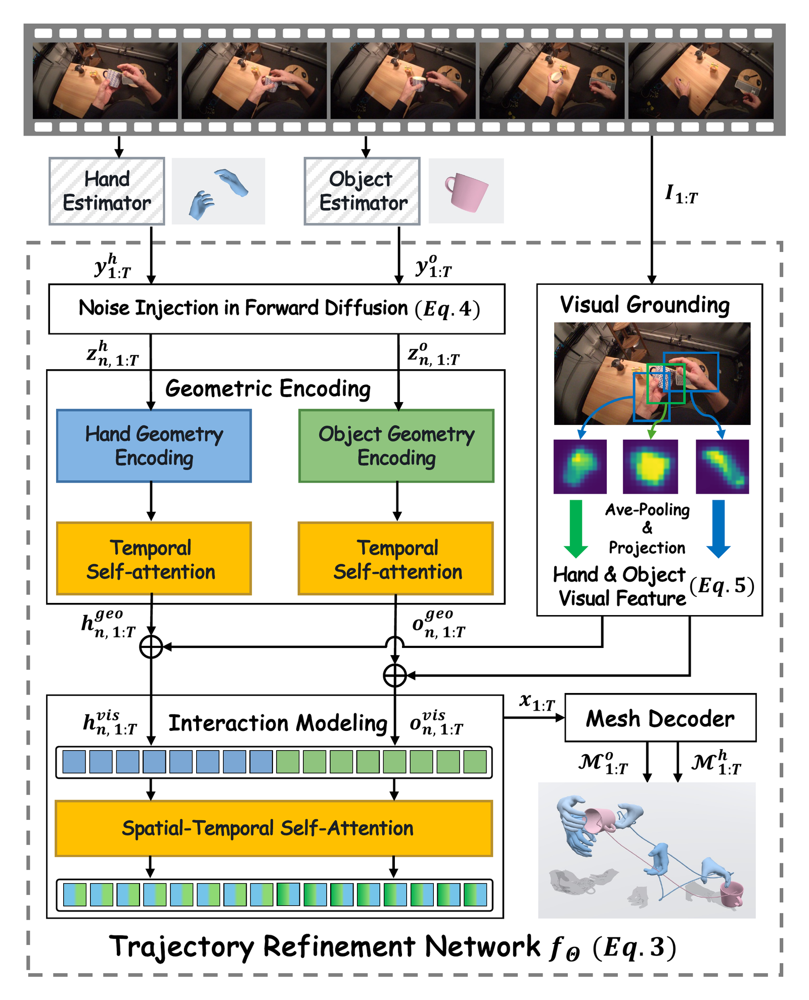
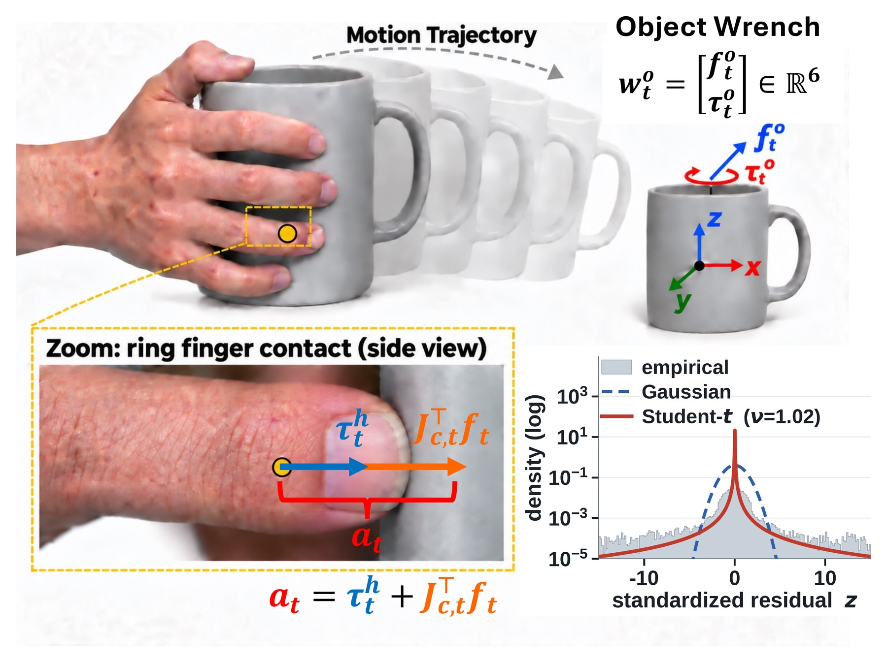

DynamicHOI refines hand–object trajectories reconstructed from monocular video with physics: hand and object dynamics, coupled through contact forces.
Input estimate (WiLoR / FoundationPose) → DynamicHOI, from the paper. ACCEL in mm/frame².
We study hand-object interaction (HOI) reconstruction from monocular RGB videos, where partial observations can produce visually plausible yet mechanically inconsistent trajectories. Existing methods mainly enforce visual and geometric agreement, leaving the underlying interaction dynamics insufficiently constrained. We propose DynamicHOI, a physics-aware HOI reconstruction framework combining geometry-grounded diffusion refinement with coupled hand-object dynamics. Geometry spatially grounds visual evidence for trajectory refinement, while articulated inverse dynamics and Newton-Euler dynamics derive hand generalized forces and object wrenches for dynamics-level supervision. We further couple hand and object dynamics through contact-force transfer and recover active hand actuation as an interaction-level physical quantity. We formulate its empirical magnitude distribution into a probabilistic prior that penalizes unlikely actuation and suppresses mechanically implausible reconstructed motion.
Experiments on three HOI datasets show consistent improvements in both hand and object reconstruction. The reconstructed trajectories further benefit downstream applications including hand world-model generation and robotic manipulation learning, demonstrating the value of physics-aware HOI modeling beyond reconstruction.


Comparison on HOT3D, HO3D-v2, and DexYCB (paper Table 1). Bold / underline denote the best / second-best reconstruction methods. † denotes our reproduction; unmarked values are paper-reported. “–” denotes metrics that are inapplicable to the method or unavailable.
| Hand | Object | |||||||||||
|---|---|---|---|---|---|---|---|---|---|---|---|---|
| Method | W↓ | WA↓ | PA↓ | ACCEL↓ | RTE↓ | ADD@.1↑ | ADD@.3↑ | ADD-S@.1↑ | ADD-S@.3↑ | 0.1d↑ | ACCEL↓ | 5°5cm↑ |
| Input estimates (y) | ||||||||||||
| WiLoR† | 11.74 | 3.70 | 6.52 | 16.22 | 75.16 | – | – | – | – | – | – | – |
| FoundationPose† | – | – | – | – | – | 12.8 | 38.9 | 25.3 | 52.8 | 6.5 | 70.15 | 6.7 |
| Reconstruction methods | ||||||||||||
| HaWoR† | 11.73 | 3.92 | 8.38 | 12.90 | 73.69 | – | – | – | – | – | – | – |
| WHOLE | 10.41 | 3.26 | 6.67 | – | – | – | 51.1 | – | 69.9 | – | – | – |
| DynamicHOI | 5.26 | 1.83 | 4.15 | 1.68 | 73.49 | 25.8 | 65.4 | 48.2 | 78.4 | 7.1 | 5.57 | 9.8 |
| Method | PA↓ | AUC↑ | PA-V↓ | AUC-V↑ | F@5↑ | F@15↑ | ACCEL↓ |
|---|---|---|---|---|---|---|---|
| Input estimates (y) | |||||||
| WiLoR† | 7.67 | 0.847 | 7.66 | 0.846 | 0.647 | 0.984 | 4.12 |
| Reconstruction methods | |||||||
| AMVUR | 8.30 | 0.835 | 8.20 | 0.836 | 0.608 | 0.965 | – |
| HaMeR | 7.70 | 0.846 | 7.90 | 0.841 | 0.635 | 0.980 | – |
| Hamba | 7.50 | 0.850 | 7.70 | 0.846 | 0.648 | 0.982 | – |
| DynamicHOI | 7.45 | 0.851 | 7.49 | 0.850 | 0.656 | 0.985 | 2.77 |
| Method | MPJPE↓ | PA↓ | AUC↑ | ACCEL↓ |
|---|---|---|---|---|
| Input estimates (y) | ||||
| WiLoR† | 11.52 | 5.33 | 0.893 | 6.88 |
| Reconstruction methods | ||||
| Deformer | 13.64 | 5.22 | – | 6.77 |
| HaWoR† | 11.09 | 5.32 | 0.894 | 3.88 |
| PAD-Hand | 10.56 | 4.63 | – | 3.34 |
| DynamicHOI | 9.51 | 4.68 | 0.906 | 3.27 |
Metrics. HOT3D hand: W / WA-MPJPE (cm; trajectories aligned on the first two frames / the whole sequence), PA-MPJPE (mm), ACCEL (mm/frame²), RTE (%). HO3D-v2: PA-MPJPE of joints / vertices (mm) with AUC in [0, 1], F-scores at 5 / 15 mm, ACCEL. DexYCB: wrist-relative MPJPE and PA-MPJPE (mm), AUC, ACCEL. Objects: ADD(-S) AUC (%) at 0.1 / 0.3 m, 0.1d recall (%), ACCEL (mm/frame²) and 5°5cm success (%).
Held-out egocentric HOT3D clips. Both hands and the manipulated object are shown from a fixed viewpoint behind the camera wearer. Each estimate is aligned to the ground truth by one rigid transform per clip, fitted on the hands; thin tubes show the recent path of each hand and the object.
DexYCB test clips (s0 split), played at 0.5× speed. The benchmark scores the hand pose relative to the wrist, so every hand is drawn at the ground-truth wrist position with the ground-truth shape, and is coloured by its per-vertex error (blue = accurate, red = ≥24 mm off). WiLoR's fingers are more often amber or red than those of DynamicHOI. Objects are the ground-truth meshes, drawn in grey for context.
Two downstream tasks use reconstructed hand trajectories. In each, only the source of the trajectories changes; every other component stays fixed.
Task. A UR5 arm with an Allegro hand must pick up an object and lift it into a green target, learning only from one human video. Following ViViDex, the reconstructed human hand trajectory is retargeted to the robot and a PPO policy is trained in simulation to imitate it. The two robots differ only in which method reconstructed the human hand.
Success = the object is within 3 cm of the target while held.
WiLoR's reconstruction jitters (see the wrist-acceleration traces), and the policy that imitates it knocks the object over or fails to lift it into the target. The policy trained on the DynamicHOI reconstruction lifts it into the target. Rollouts use the paper's evaluation protocol (randomized initial object pose).
Following EgoHOI, hand trajectories reconstructed on HOT3D condition a video world model that generates the egocentric interaction. Each clip shows the real video (left) and generations conditioned on hand actions from WiLoR (middle) and DynamicHOI (right). The green outline marks where the real hand is; the bottom row zooms on it, and the inset shows the hand condition given to the generator.